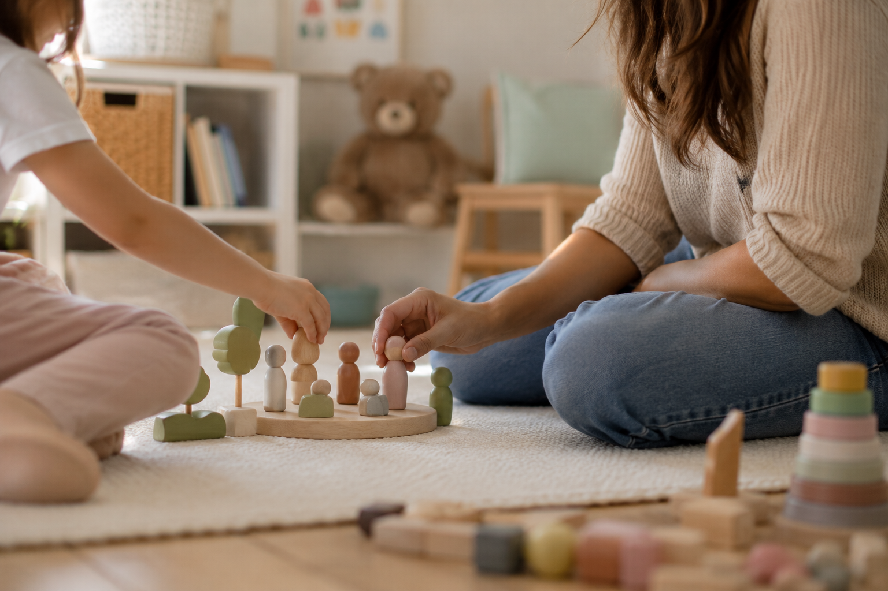
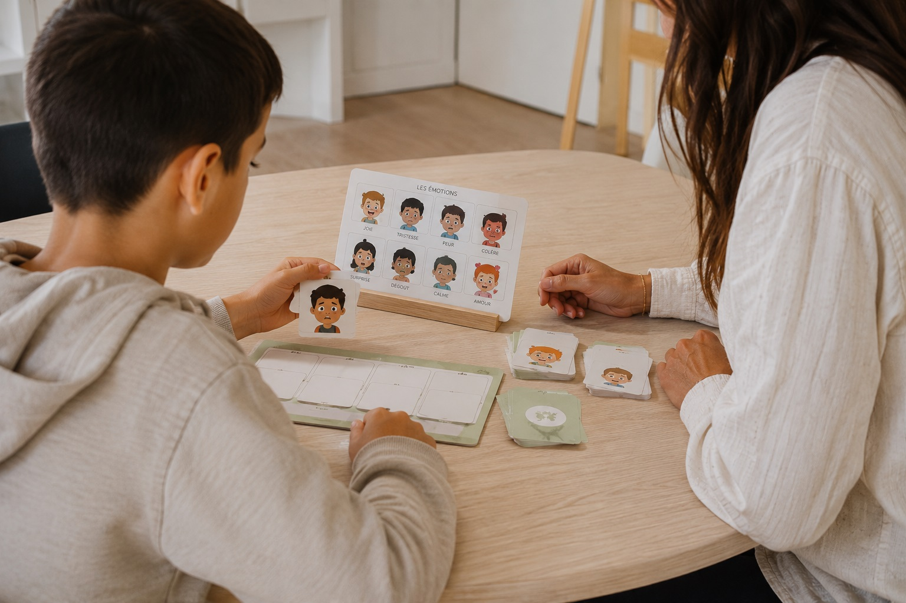
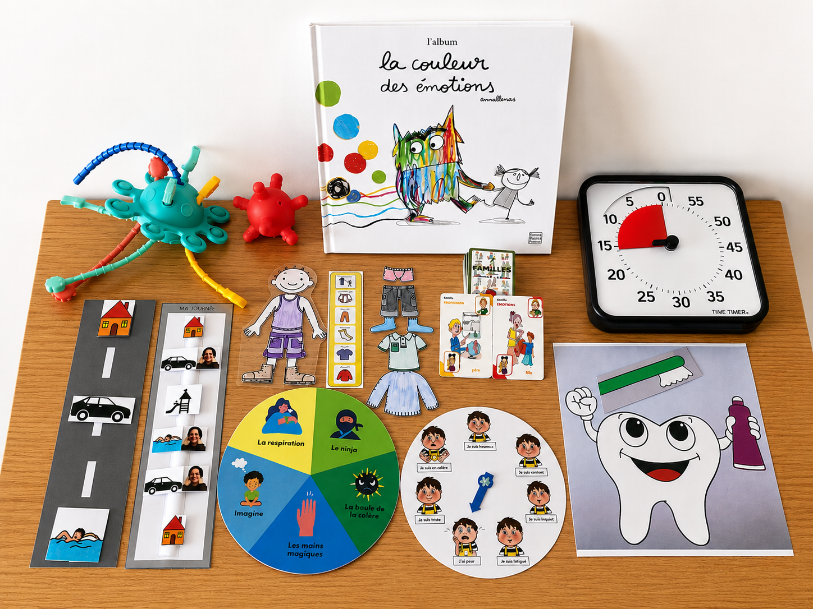

Accompagner un jeune, c’est aussi accompagner toute une famille.
J'interviens directement dans les lieux où les besoins apparaissent : école, domicile, centre de loisirs, IME, ULIS, sorties et vie quotidienne.

À l’école
Classe, récréation, cantine, lien avec l’équipe éducative.
À domicile
Routines, autonomie, émotions, soutien parental.
En structure
IME, ULIS, communication, coordination.
Loisirs & sorties
Centre de loisirs, inclusion, activités extérieures.
Vous vous reconnaissez peut-être...
Vous n’avez pas besoin d’attendre que la situation devienne difficile pour demander de l’aide.
Les adaptations, les relations ou certains temps collectifs deviennent compliqués.
Repas, coucher, transitions ou hygiène prennent beaucoup d’énergie.
Avec des outils concrets, progressifs et adaptés à sa réalité.
Il a besoin de comprendre ses réactions et d’avoir des repères.
Pour prendre du recul et construire des réponses plus ajustées.
Même sans urgence, un accompagnement peut aider à avancer.
Qui suis-je ?
Je suis éducatrice spécialisée diplômée depuis 2019.
Ce métier n’est pas arrivé par hasard. Mon parcours s’est construit autour de plusieurs expériences complémentaires : une licence de psychologie, deux années en interprétariat Français / Langue des Signes Française, des expériences en animation, en handicap et dans l’accompagnement de jeunes aux besoins particuliers.
Mon expérience en SESSAD (Service d’Éducation Spéciale et de Soins À Domicile) a renforcé ma conviction qu’il est impossible d’accompagner un jeune sans prendre en compte son environnement.
Aujourd’hui, j’ai choisi d’exercer en libéral afin de proposer un accompagnement plus souple, plus réactif et plus individualisé aux familles.

Mon approche
Pas de méthode miracle. Pas de solution toute faite.
J’observe, j’écoute et je prends le temps de comprendre le jeune dans son quotidien. Nous définissons ensuite ensemble des objectifs réalistes et utiles.
Adam
Accompagnement autour de l’isolement pendant les récréations.
Julien
Autonomie progressive sur le temps de cantine.
Lili
Gestion émotionnelle et compréhension des relations avec les autres.
Thomas
Communication en LSF et transmission d’outils aux équipes.
Sofia
Préparation de l’accueil en centre de loisirs.
Yoan
Observation en classe pour identifier des adaptations utiles.
Mon objectif n’est pas de créer une dépendance à l’accompagnement, mais de vous donner des outils pour avancer avec plus d’autonomie.
Des outils adaptés à chaque jeune
Chaque outil est pensé pour être réellement utile dans le quotidien du jeune et de sa famille.

Chaque accompagnement est unique, mais voici les grandes étapes que nous suivrons ensemble.
Prenons contact
Vous me contactez par téléphone ou par mail.
Nous échangeons autour de votre situation, de vos questionnements et des besoins de votre enfant.
Cet échange permet de voir si mon accompagnement peut vous correspondre.
Faisons connaissance
Je rencontre votre enfant et son environnement afin de mieux comprendre son fonctionnement.
Ses difficultés, ses ressources et ses besoins du quotidien sont pris en compte.
Construisons le projet
Nous définissons ensemble des objectifs concrets, réalistes et utiles au quotidien.
Les interventions peuvent avoir lieu à domicile, à l’école, en structure ou dans tout autre lieu pertinent.
Avançons à votre rythme
L’accompagnement évolue selon les besoins, les progrès et les difficultés rencontrées.
Mon objectif : favoriser l’autonomie du jeune et permettre à la famille de retrouver davantage de sérénité.
Secteur d’intervention
Montpellier et communes environnantes, dans un rayon d’environ 30 km.
Si vous avez un doute concernant votre localisation, contactez-moi.
Tarifs
Frais kilométriques : 0,636 €/km au-delà de 20 km.
Aides possibles : PCH, AEEH, AAH.
Un devis gratuit peut être transmis pour toute demande de financement auprès de la MDPH.
Questions fréquentes
Faut-il un diagnostic pour être accompagné ?
Non. Les besoins du jeune suffisent pour échanger ensemble.
Intervenez-vous sans notification MDPH ?
Oui, cependant le coût reste à la charge de la famille.
Travaillez-vous avec l’école ?
Oui lorsque cela est pertinent pour le projet du jeune.
Les parents peuvent-ils être présents ?
Oui selon les besoins et les objectifs définis ensemble.
Combien de temps dure un accompagnement ?
Il n’existe pas de durée type. Certains accompagnements sont ponctuels, d’autres s’inscrivent dans le temps.
Puis-je faire appel à vous ponctuellement ?
Oui. Un accompagnement peut être régulier ou ponctuel selon les besoins.
Vous n’avez pas à porter tout cela seul.
Vous souhaitez soutenir votre enfant dans son développement ? Vous recherchez des solutions concrètes adaptées à son quotidien ? Parlons-en.